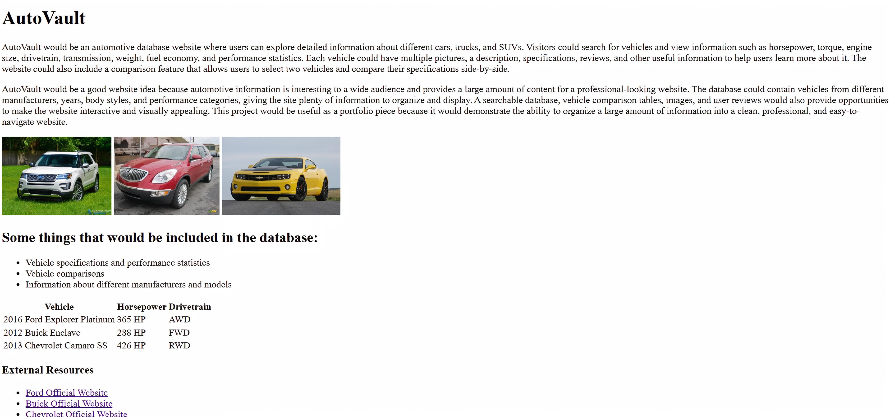
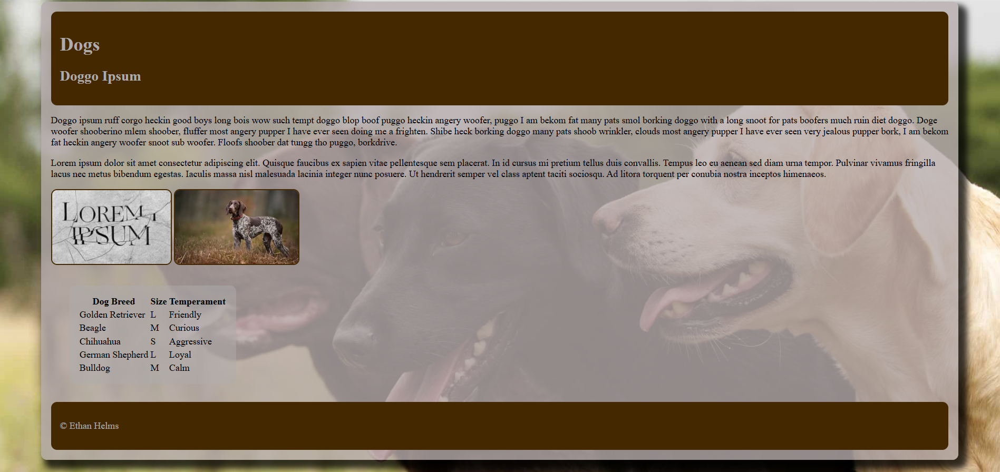
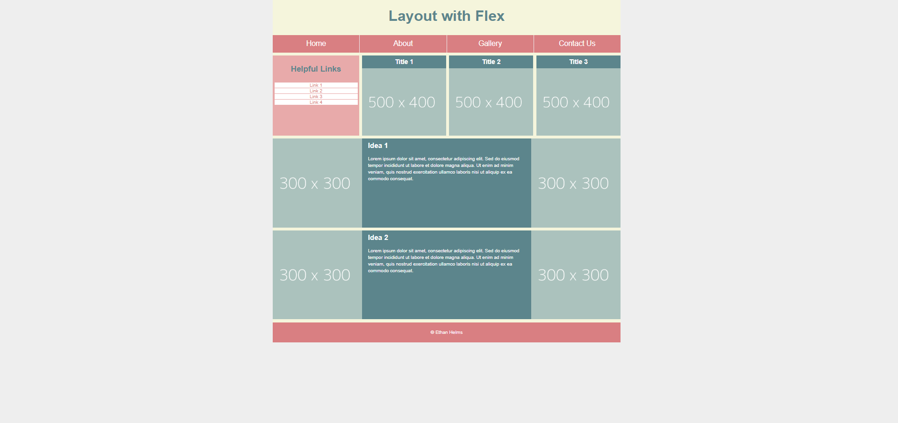
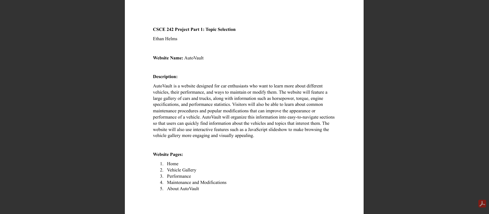
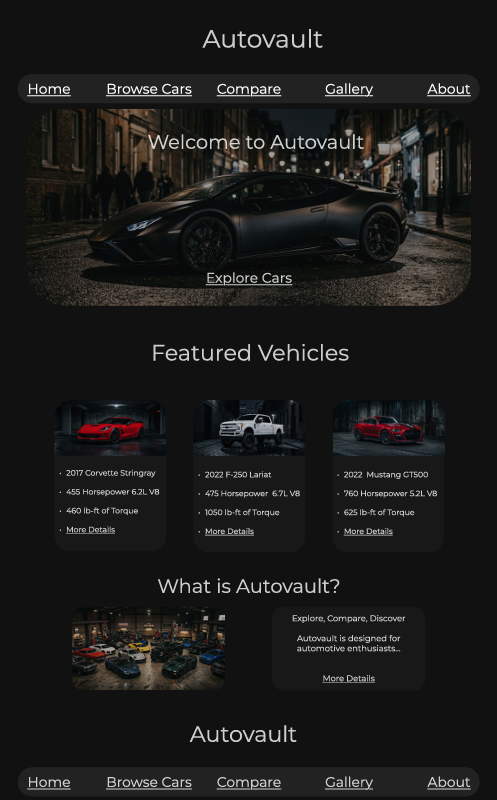

Assignment 1 - Basic HTML

This assignment introduced the basic structure of an HTML webpage. I practiced using headings, paragraphs, lists, links, and images to create a properly organized webpage.
Ethan Helms
Welcome to my CSCE 242 portfolio page! Included in this page are links to GitHub repo and my assignments and other projects for CSCE 242.

This assignment introduced the basic structure of an HTML webpage. I practiced using headings, paragraphs, lists, links, and images to create a properly organized webpage.

This assignment focused on using CSS to improve the appearance of a webpage. I worked with colors, spacing, fonts, borders, and other styling techniques to create a more appealing design.

This assignment focused on creating a responsive webpage layout using HTML and CSS. I used Flexbox and media queries to change the arrangement of content depending on the screen size.

This project introduces the topic and overall idea for my website project. It describes what the website will be about and the type of information and content that will be included.

This project presents a wireframe for the homepage of my website. It outlines the structure and layout before implementing the actual design.